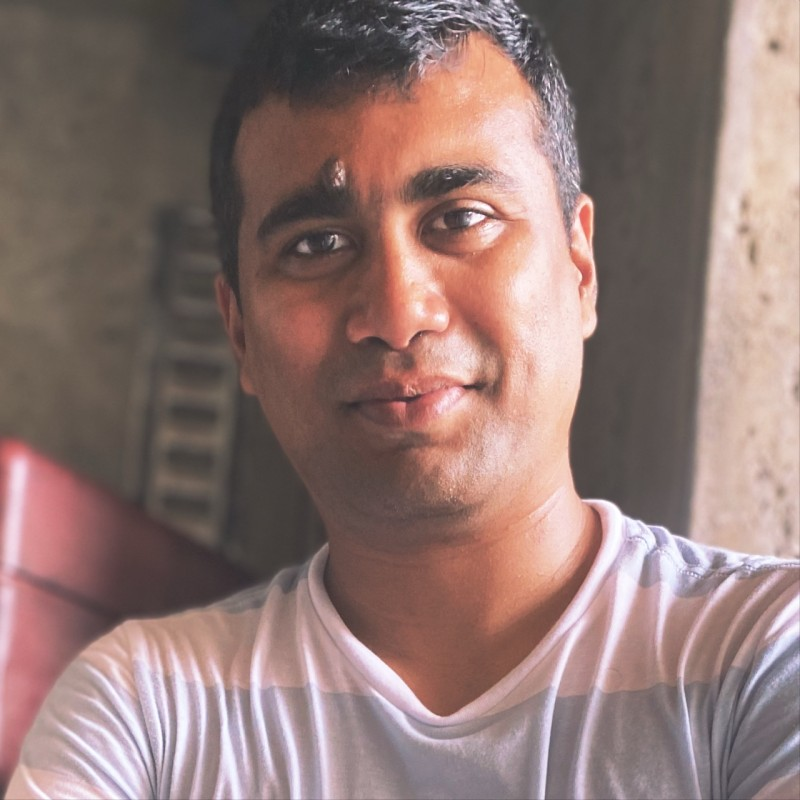

Enterprise Architecture · Target-State Strategy · Cloud & AI
19 years helping complex enterprise platforms evolve from tightly coupled legacy ecosystems into modular, API-driven, cloud-ready architectures. Today that means authoring the target-state architecture for the PX / Planning Solutions platform — cleaner domain boundaries, reusable platform services, experience and domain APIs — and coordinating that direction through SART and enterprise governance. I partner with CTOs and senior technology leaders to work through real trade-offs, make sure what gets promised actually gets built, and stay hands-on through delivery.

I author target-state architectures for complex enterprise platforms — then stay close to delivery so the roadmap survives contact with real teams, real data, and real production constraints.
Today I'm the Planning Solutions architect at Northwestern Mutual, where I authored the PX Platform target-state architecture and modernization roadmap and represent the platform in SART and enterprise governance — aligning domain boundaries, API ownership, data separation, and incremental migration paths with enterprise patterns, security guardrails, and operational readiness. Before that: 17+ years growing from engineer to director across financial services, insurance, retirement, industrial, and mortgage platforms — owning everything from RFP solution leadership and ARB sign-off to event-driven platforms, GenAI tooling, and B2B2C experiences.
AWS Certified Solutions Architect. Published two Infosys whitepapers on microapp architecture and mobile strategy.
From boardroom advisory to hands-on delivery — the full arc of enterprise solution architecture.
Enterprise client engagements across financial services, insurance, and industrial sectors — plus personal engineering builds. Client work is confidential, so those are described case studies; the personal projects link to a live site or source where available.
The centerpiece of my current work: authoring the target-state architecture and modernization roadmap for the PX / Planning Solutions platform — the honest map of how planning capabilities evolve from a tightly coupled ecosystem into independently scalable domains connected through APIs and reusable platform services. It's built around domain boundaries, API ownership, data separation, and incremental migration paths — dual-write thinking, feature toggles, rollback options — so teams can move from legacy capabilities to the new platform model without ever disrupting an advisor mid-conversation. Integration direction spans PX Platform, Advice Workspace, Jump, Data Import Manager, and client/account data capabilities, coordinated through SART and enterprise governance.
Shaped ORA — Objectives, Recommendations & Achievements — as a domain within the advisor's Advice Workspace in Planning Solutions, built around the simple truth that the best parts of a planning conversation are usually the ones that get forgotten. It gives a durable, structured home to what a client truly wants out of life — their objectives — the guidance an advisor offers in return — the recommendations — and the milestones they reach together along the way — the achievements. Nothing slips through the cracks between meetings; the thread of why holds from one conversation to the next, so a client feels genuinely heard and an advisor can pick up exactly where they left off, with every promise and win on the record.
An advisor- and client-facing view that brings the financial plan to life — turning a static, intimidating document into something a client can actually see and feel good about. It lays out the client's balance sheet in plain, honest view and shows how the plan is shaping the progress of their financial life: what's on track, what's quietly moved forward, and how close the goals that matter most — a first home, a comfortable retirement, a child's education — really are. Advisor and client look at the very same picture together, so the conversation shifts from worry and guesswork to clarity, confidence, and real momentum, and every decision lands with a tangible sense of progress.
Multi-import and multi-export of client and household demographics and financial facts — the quiet, foundational data every financial plan is built on, and the tedious part advisors used to dread re-keying by hand. Beyond simply moving data in and out, the design adds an auto facts-resolution engine that does the patient, unglamorous work: it gathers facts from many sources, reconciles the conflicts, judges their accuracy on its own, and surfaces each one on an honest confidence scale — assured where it's certain, flagged where it isn't. The payoff is trust in the numbers before the planning even begins, freeing advisors from data-janitor chores to do what they're truly there for — building the relationship and guiding the client toward what's next.
Real financial lives rarely fit inside one advisor's office — couples, families, and specialists so often need to plan side by side. This work made that possible: secure multi-advisor collaboration — Advisor Joint Work and Co-Client scenarios — as the real business outcome, delivered by moving the Planning Experience off brittle legacy MQ onto gRPC for its Algorithm and Calculation service integrations. Cleaner contracts and lower latency let each service evolve on its own and turned shared, real-time planning across advisors from a wish into something that simply works.
A GenAI/LLM platform that quietly listens in on advisor–client conversations and lifts the structured financial facts straight out of them. The point is deeply human: instead of scribbling notes and chasing details, an advisor can look the client in the eye and actually be present, while the technology does the remembering in the background.
Led a 24+ person cross-functional team building a fleet-management portal for distributors and machine owners across Construction, Mining, and Forestry — the people whose livelihoods ride on equipment staying in the field, not stuck in a yard. The business needed it in ten unforgiving months; the team pulled together, kept its nerve, and delivered.
Sat shoulder to shoulder with the CTO to shape the transformation strategy, carried it through the ARB process to formal sign-off, and built B2B2C experiences for the real people on every side of a retirement plan — Members, Advisors, Plan Sponsors, and TPAs — including opening up a micro-market segment that simply hadn't existed before. Retirement is a profoundly personal thing to get right, and this gave each of those audiences a platform that respected the weight of it.
Untangled the Life, DI & LTC servicing platform from a brittle web of point-to-point integrations and gave it an event-driven backbone. Now the moment underwriting approves a contract, everything downstream — issuance, policy updates, reporting, commissions — springs into motion on its own. Behind each of those quiet events is a family finally getting the coverage they'd been waiting on.
Designed a platform on Azure Container Services that drew three islands — Marketing, Servicing, and Communications — together into one coherent experience. For a homebuyer in the middle of one of the biggest decisions of their life, it meant the company finally felt like a single, steady voice instead of three that had never met.
My take on what a modern insurance claims platform should look like. The event log is the system of record (Kafka event sourcing), and AI sits on top as an advisory layer — it drafts the decision, a person makes it. I worked it end to end on Life & Disability claims and deliberately wrestled with the parts most designs quietly hand-wave: fraud, the money-movement saga, right-to-erasure on an immutable log, and disaster recovery. A claim usually lands on someone's worst day, and the whole design tries to honor that — fast and fair where it can be, unmistakably human where it has to be.
A self-directed reference architecture, built for the sheer love of the problem, that streams industrial machine telemetry into Palantir Foundry — Bronze→Gold pipelines, a full Ontology model, and an NBO/NBA decision engine. It's me chasing a genuine curiosity: how a noisy fleet of machines out in the field can quietly tell you what it needs before it ever breaks down.
A production-grade momentum engine that trades stocks, ETFs, and options through the Schwab API — a tiered 9-signal model with full risk management, deployed on AWS and running (carefully) in paper mode. Part engineering challenge, part lifelong fascination with markets — tempered by a healthy respect for how fast real money can go wrong, which is exactly why it stays in paper mode until the numbers earn my trust.
Engineer to director across 17+ years at Infosys — delivering transformation and tech consulting & delivery engagements at client sites — now architecting in-house at Northwestern Mutual.
Authored the PX Platform target-state architecture and modernization roadmap — how planning capabilities evolve from a tightly coupled ecosystem into independently scalable domains connected through APIs and reusable platform services — and represent Planning Solutions at the enterprise Solution Architecture Roundtable (SART), aligning decisions with enterprise patterns, security guardrails, data-access standards, and operational readiness. Shaped the ORA (Objectives, Recommendations & Achievements) domain and the advisor's Advice Workspace, Plan Progress for advisors and clients (the client's balance sheet and the impact of the financial plan on their financial life), the MQ→gRPC migration enabling secure multi-advisor collaboration planning (Advisor Joint Work & Co-Client), the ALAI GenAI platform, and the Domain API layer & Data Import Manager.
Full-time Infosys employee for 17+ years, delivering enterprise transformation and tech consulting & delivery engagements at client sites across financial services, insurance, and industrial sectors — growing from engineer to director and owning the full lifecycle from RFP through production. Strategic Advisor & Principal Architect on the ATP Tour 3-year transformation (Tournament Operations & Player Experience); Director, Digital Products on Komatsu; Principal Architect for a leading retirement record keeper; and Solution Architect across Northwestern Mutual insurance servicing & document management and Movement Mortgage. All client engagements below were delivered under Infosys.
Built a document management platform that replaced microfilm and microfiche across Life Insurance business areas. Set CI/CD standards, managed department onboarding, and helped the organization fully decommission legacy document infrastructure.
Contracts Production Platform (freed up 12 FTEs through low-touch processing), Sales Illustration Platform (NAIC-compliant advisor tools), and Enterprise Electronic Forms — progressively taking on more architecture and leadership responsibility.
G2B Portal (Govt. of India), a Re-Insurance Intranet, and a British Telecom Service Portal — delivered as an Infosys engineer.
B.E. Electrical Engineering
Birla Vishwakarma Mahavidyalaya — Sardar Patel University, India
2003 – 2007
Girls in Tech mentor — Ronald Reagan HS, Milwaukee (2025–Present) · EE&T Pathway Leadership Mentor (2026) · Committee Member, Jain Society of Metropolitan Chicago · NW Mutual Hi-Tech STEM Outreach & Kids Reading Program
Open to conversations about Solution Architecture, cloud & AI transformation, and CTO-level advisory.